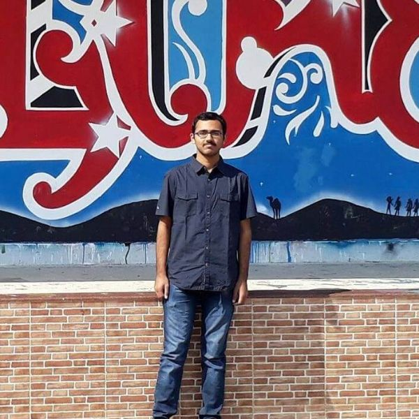
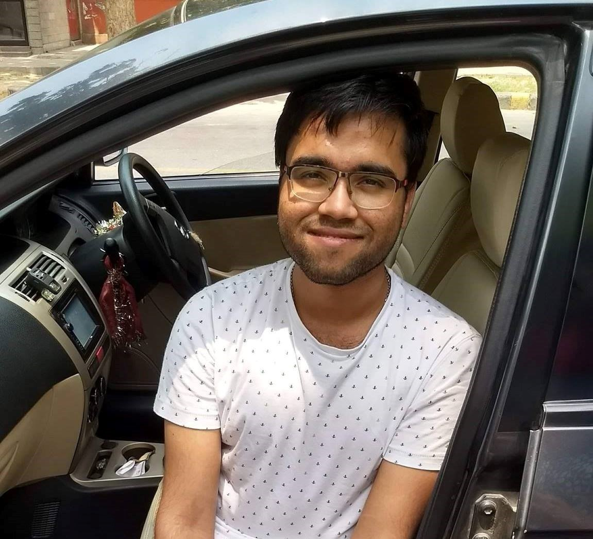
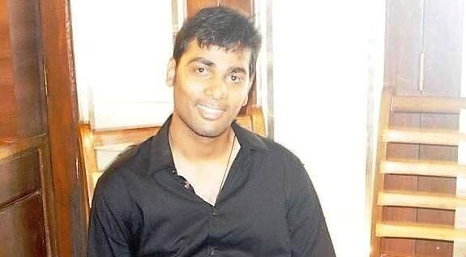
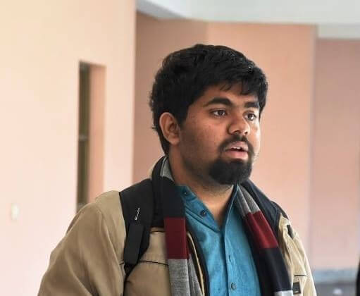
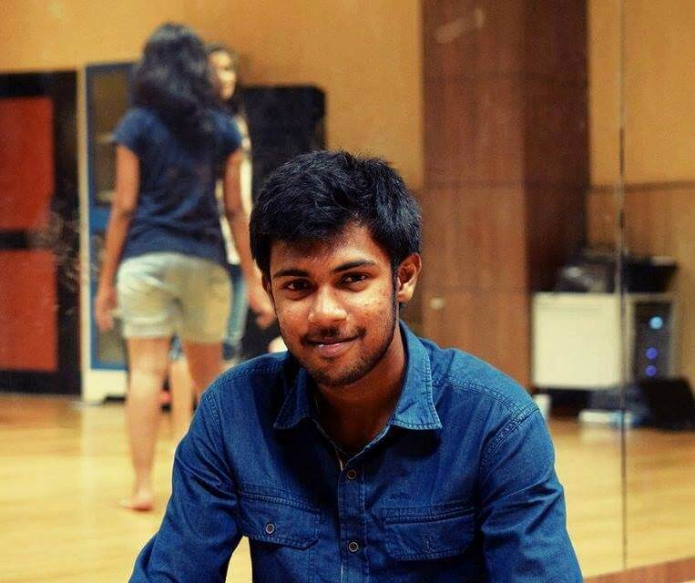
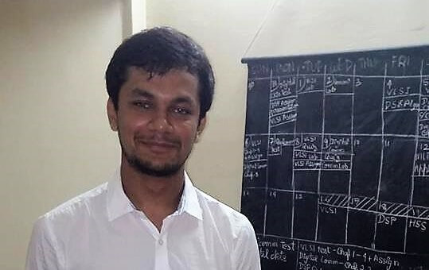
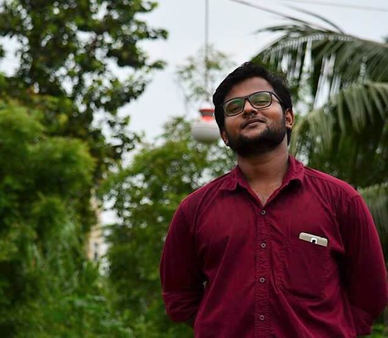
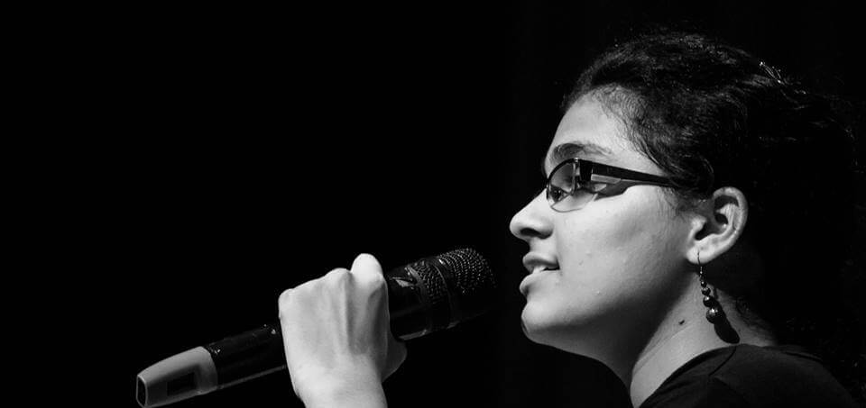

Joining ECE at IITG was very scary for me as quite a few people had told me that the course will be very exhausting and tough to tackle. The common electrical course in the first year confirmed that. I used to dread what would happen when there would be core department courses. However, at the far end of the fourth semester, I realize that these courses have helped me find an area of interest: Digital Systems Design. Gone are the days when the only two things between which I had to juggle my time were boards and JEE preparation. Being part of Techniche and multiple projects in clubs have taught me so much more than just how to manage time. It gave me the chance to meet some amazing professors and students. Overall, the last two years have been a memorable learning experience. I look forward to the next two years in this beautiful campus and whatever it has in store for me.
My Caffeinated Journey
Well, it is nearly next to impossible to pen down in literature what an awesome journey I had till now, fingers crossed for the road untravelled, but none the less it is not what it teaches you but rather what you take out of the situations dangling in front of you. A flashback to my own past will reveal a lazy person waiting for the canvas to be filled on its own, but now thanks to IIT I am a completely changed person who is capable of transforming a canvas into a beautiful scenery with only a single colour. Some of the amazing moments I had till now is waking up the entire night to find pretty nasty bugs in my code and even to some extent in my life. It feels really awesome when you find some awesome gaping holes in some of the most famous consumer famous websites (P.S. - If I take a single name they will probably kill me, hahaha) and then get rewarded for your efforts. And this all possible because my mind is no longer bounded inside a box but rather the sky itself. Cheers to the upcoming journey :)
Having lived the corporate life for nearly 3 years right after my graduation, I did understand that it was very hectic and monotonous. Obviously, every job demands a certain amount of time from us since we get paid, but it does not mean that we should lose ourselves in the humdrum of this life. By the time we realize that it becomes too hard to leave our routine and enjoy the true essence of life. I am the kind of person who wishes to explore and revel in the beauty of nature. So out of the busy schedule, I used to take out time to unwind and see new places, go on treks, do adventure sports, which I do even now. Travelling gives me happiness and maintains a balance in my life. I believe everyone has that “something” which gives them true contentment. I can recollect many things from my childhood days when I used to travel with my parents whenever there were vacations. My mom and I used to tag along with my father when he had some conferences out of the city. These memories and the zest to travel translated into my blog where I store my experiences and share it with the handful of readers.
Blog Link: www.spectrum-of-life.com
I was like any other guy who had the notion that Marks -> Grades -> Job -> Wealth translates to “Success”. I kept on comparing myself with others to compete to be more ‘successful’. I fulfilled what I wished for and didn’t in some cases. But, even when I got what I wanted, I wasn’t content either. I realized that if you aren’t happy without it, you aren’t happy with it. But now, I’ve peace as I stopped comparing, I’ve joy as I do what I really love, and I am content as I’ve no regrets. And about success… I stopped bothering… I care more about being happy at the moment since you never know what the future has to offer.

I have always seen myself as a guy who can cherish his dreams and can do anything in his life that he wishes for. In my simple life, I have always targeted small goals and have worked hard to achieve them. There have been a lot of failures too, but they always taught me one thing i.e. not reciprocating my mistakes. I am a guy who loves living on edge and taking risks in life & mentioning one of them is that I decided to take humanities when I was in class 11 but luckily I didn’t and I am fortunate to those who convinced me not to put my steps in field of humanities. I love reading history and I can spend hours watching documentaries of world wars. Though I aspire to be an IPS officer, I have to wait & see where my life takes me.
I have always been fond of writing, be it essays or letters in school, or any other piece of writing. Earlier when I started writing poems, it looked like a hilarious attempt. But now, a few 'experiences' later, it seems as if words naturally flow out of me. Whatever I've ever felt lies there written. Experience is a great teacher. And not only your own, lessons are learnt from others' experiences as well. Whatever are my lessons, be it my experiences or others', they have always helped me to understand the world better. And all this has taken the form of my poems.
I am in a place where I will earn four defining years of my life. I am where I want to be - at IIT Guwahati!

THE ULTIMATE LIFE GOAL OF ANYONE AND EVERYONE:
Currently, I am not not sure who I am! Its just that I am finding what I wanna be. Whatever I end up with, it is meaningful and enjoyable only if it happens to be my own. My life will be a success if I get up in the morning and go to bed at night and in between I do what I really want to do.
The biggest worry I would have had a year ago would be an approaching endsem or a project deadline. But now the world has changed so much so quickly! All of sudden we are dealing with huge MNCs coming to campus for recruiting interns. It’s exciting, but equally scary when I think that nearly a year from now, I will bag a job in one of these companies. The best thing about this would be that I will no longer ask my father, “Papa, account mein paise dalwa do."
Twenty years from now I want to be a part of something which even scientists call 'MAGIC'! And no, I definitely am not talking about illusions and parlor tricks.
Since I was little, I could only see through one eye. As advised by doctors, I had to keep the other one closed most of the time under my ongoing treatment. Once when in Delhi for an eye checkup, we were staying with a family friend, who played harmonium. I would sit near him and intently listen to him play and sing. That is how I came to love music. Music entered my life that day, when dad said, “My daughter would learn to sing”. Since I had to keep my eyes closed, my father would teach me by dictating the alphabets and tracing them with my fingers. It was the same with music; he would learn the basic notes from the teacher and then teach them to me. Only when I was in first standard did I realize what I was writing and then learnt to write on my own. From the time I was in fourth standard, I was leading the school choir and playing the harmonium in the assembly. When I was 12 years old, I participated in a national level singing competition held in Katra, J&K though it was for ages of 15 years and above. I cleared the auditions and made headlines that day.